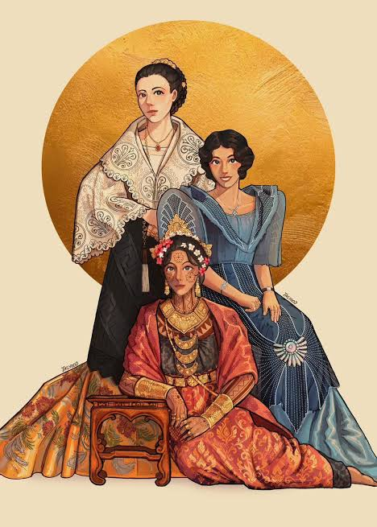
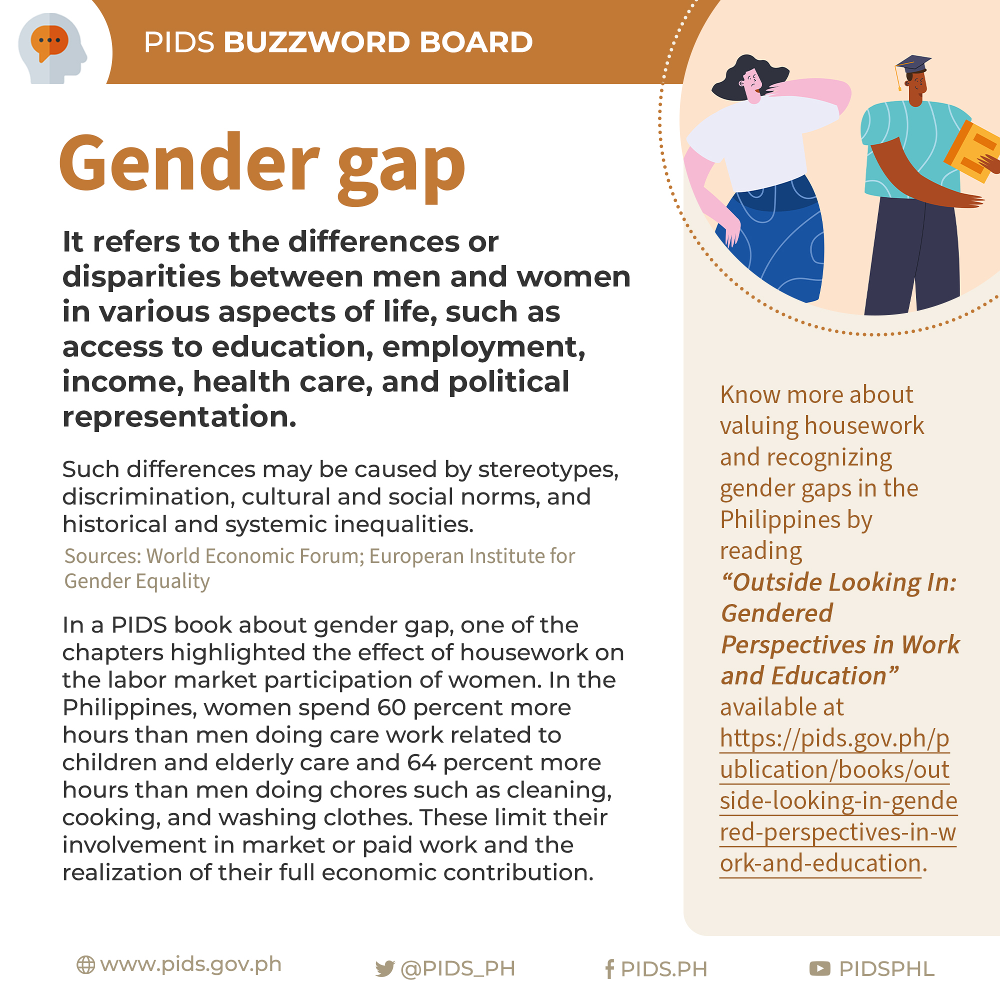

Group-8 | Presented By: Jhon Keith Lhexter Bonayog, Kimberly Alegria, Dailyn Collamar, Jonuel Ortiz, Raven Macorol, Mike Tingzon
An academic exploration of how expectations, responsibilities, and identities have evolved from pre-colonial times to modern Philippine society.
Gender roles refer to the distinct social behaviors, duties, expectations, and activities that a specific culture or society prescribes as appropriate for individuals based on their perceived gender identity.
It is vital to distinguish between biological sex and gender roles. While biological sex is determined by physical characteristics, chromosomes, and anatomy, gender roles are entirely socially constructed, taught, and learned from a young age through family, media, and cultural institutions.
Studying gender roles in the Philippines is crucial because these social scripts dictate how individuals navigate education, career paths, domestic duties, and leadership opportunities, deeply influencing both individual freedom and wider societal equality.
Before colonization, Philippine society held an egalitarian view of gender. Women enjoyed high social status, could own property, inherit leadership, and divorce. Most notably, the Babaylan (spiritual leaders, healers, and shamans) were predominantly women or feminized men (Asog), holding massive political and spiritual power within the barangay.
The arrival of Spanish rule introduced a rigid, patriarchal European model. Through Catholicism, the free pre-colonial woman was reshaped into the concept of Maria Clara—submissive, domestic, deeply pious, and legally dependent on fathers or husbands. Women lost their institutional leadership roles and political authority.
The American period introduced public education systems, which allowed Filipinas to enter formal academic spaces and the professional workforce. Women gained the right to vote in 1937, paving the way for contemporary movements aimed at recovering the equality lost during centuries of colonial rule.
In the modern Filipino household, women are traditionally viewed as the "Ilaw ng Tahanan" (nurturers and financial managers), while men are seen as the "Haligi ng Tahanan" (breadwinners). However, education has shifted significantly, with Filipinas consistently matching or outperforming males in school enrollment and graduation rates.
While women actively participate in the formal workforce, they often carry a "double burden"—balancing full-time employment with unpaid domestic labor. Furthermore, the massive wave of Overseas Filipino Workers (OFWs) has forced a role reversal, where many mothers migrate for work, altering traditional child-rearing dynamics at home.
The Philippines stands out in Asia for having elected two female presidents and boasting strong corporate leadership representation. Despite this visibility, leadership at the local community level (such as barangay captains) and in legislative bodies still skews predominantly male.
Gender Stereotypes: Persistent societal pressure dictates that men must remain stoic and unemotional, while women are often pushed toward administrative, supportive, or purely care-oriented fields.
Discrimination & Opportunities: Members of the LGBTQIA+ community continue to fight for legal recognition and protection, facing systemic hurdles in corporate spaces due to the lack of a nationwide anti-discrimination policy like the SOGIE Equality Bill.
Media Representation: Local mainstream media frequently relies on outdated tropes—often reducing complex women characters to secondary, domestic plots, or casting queer individuals solely as comic relief rather than giving them nuanced roles.
Systemic Inequalities: Economic vulnerabilities remain uneven, with low-income women disproportionately impacted by restricted reproductive health access, gender wage gaps, and limited career mobility in rural sectors.
A critical comparison reveals a complex evolution: while the pre-colonial era offered structural equality and high spiritual authority for women, the heavy imposition of patriarchal systems during the Spanish colonial period institutionalized rigid gender roles that still echo in modern society.
In contemporary times, notable progress has been made—such as female educational advancement, high labor participation, and prominent leadership roles. However, deep-seated cultural expectations like the "double burden" and persistent media stereotypes show that structural change moves slower than legal or academic progress.
Ultimately, gender expectations act as invisible scripts that can limit individual potential and restrict personal choices. True equality requires dismantling these historical biases, passing protective legislation, and building inclusive spaces that accommodate diverse gender identities in the Philippines.

Visual timeline mapping out the shift from egalitarian pre-colonial structures to colonial patriarchal expectations.

Visual breakdown of contemporary domestic responsibilities, media representation, and workplace percentages.
In summary, gender roles in the Philippines are not static concepts but are continuously reshaped by historical developments, shifting socio-economic policies, and active cultural negotiations. While centuries of colonial influence successfully imposed deep-seated patriarchal structures, the inherent egalitarian spirit of our society continues to drive modern progress.
Our overall insight highlights that achieving true gender equality requires moving beyond mere surface-level representation. It demands a collective commitment to dismantling outdated stereotypes across families, institutions, workplaces, and media environments to foster an inclusive future for all Filipinos.